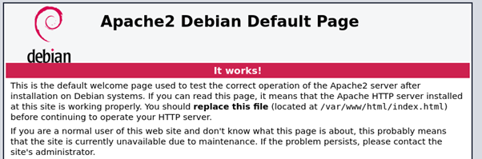

Asennus tehtiin su 6.2.2022
klo 20.20
Olin jo asentanut Apachen luennolla joten jotta voisin tehdä tämän tehtävän minun piti ensin poistaa vanhan asennuksen. Tämä oli pikkaisen haastavaa, koska en tiennyt miten ohjelmia poistetaan linux koneelta. Etsin netistä apua, mutta ensimmäiset yritykset eivät onnistuneet. Lopulta löysin ohjeet keskustelufoorumilta ja sain Apachen poistettua.
20.46
Kirjoitin komentotulkkiin sudo apt-get update ja annoin sudo salasanan.
Kirjoitin komentotulkkiin sudo apt-get install apache2
Tuli paljon syötettä joka viittasi siihen, että jotain asennettiin.
20.50
Kirjoitin komentotulkkiin sudo systemctl start apache2, koska se piti muistiinpanojeni mukaan käynnistää apache2 ohjelman. Komentotulkki ei tulostanut mitään.
Kirjoitin komentotulkkiin curl localhost koska se oli muistiinpanoissani. Tulos oli että komentotulkki tulosti pitkän liuskan html:ää.
20.52
Kirjoitin komentotulkkiin firefox localhost. Tämä avasi selaimen ja näytölle tuli apachen info sivu.
